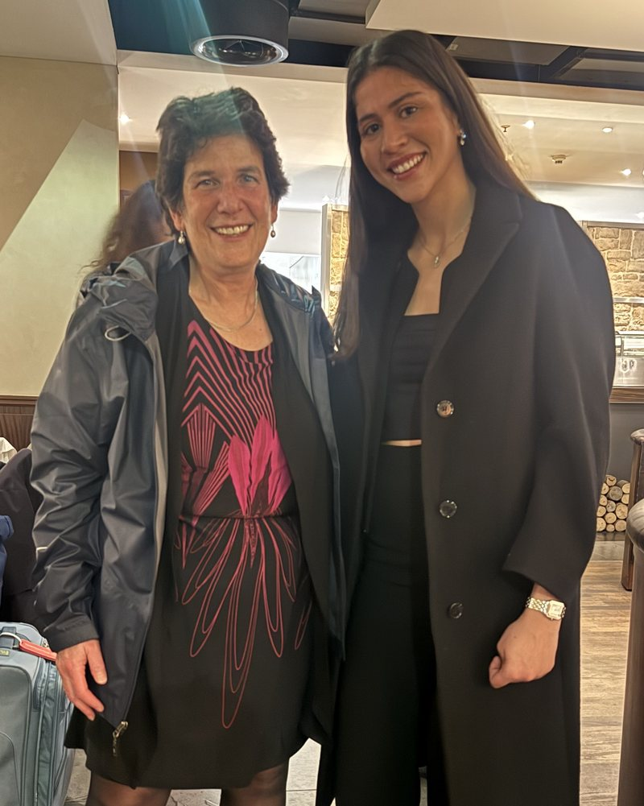

Highlight · 2026
Speaker at the Erna Hamburger Prize ceremony
EPFL · EPFL WISH Foundation
I was selected to introduce Professor Margo Seltzer, the 2026 laureate of the Erna Hamburger Prize, on stage at EPFL. Awarded by the EPFL WISH Foundation, the prize honours outstanding women scientists whose work has shaped their fields and inspired the next generation.
In my speech I shared part of my own journey as a woman in computer science, before Professor Seltzer's lecture on collaboration and a new paradigm for machine learning built on simpler, more interpretable models.